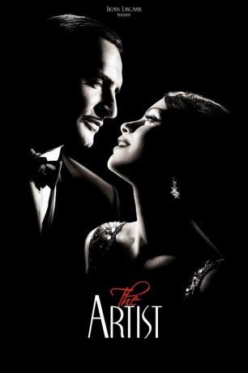

#11212 The Artist
Auszeichnungen: 5 Oscars gewonnen für 5 Oscars nominiert 3 GoldenGlobes gewonnen 1 BAFTA-Awards gewonnen
 
 IMDB-Wertung: 7.9 / 10
IMDB-Wertung: 7.9 / 10  Metascore: 89
Metascore: 89 
George Valentin ist The Artist im Stummfilm-Hollywood der 1920er Jahre. Das Publikum liebt ihn, und er liebt den Ruhm und die Frauen. Mit seiner Schützenhilfe schafft es sogar die junge Statistin Peppy Miller zu einem aufsteigenden Stern zu werden, der allerdings noch immer von Valentin überstrahlt wird. Doch als sich die Filmtechnik weiterentwickelt, wendet sich das Blatt. Valentins Tage sind gezählt und Peppy kann endlich aus seinem Schatten treten…
Jahr: 2011
Dauer: 100 Minuten
FSK: 6
Land: Frankreich Studio: Delphi Filmverleih ProduktionTonspuren:
Untertitel:
Auflösung: 1080p (1408x1080) Größe: 6789 MB
Genre: Drama, Komödie, Liebe
Regisseur: Michel Hazanavicius
Drehbuch: Michel Hazanavicius
Soundtrack: Ludovic Bource
Darsteller:
Datei: X:\NEU\Artist, The (2011, FSK6, 1408x1080).mkv seit 17.05.2019
 Es gibt insgesamt 187 Filme in der Gruppe 'NEU'
Es gibt insgesamt 187 Filme in der Gruppe 'NEU'